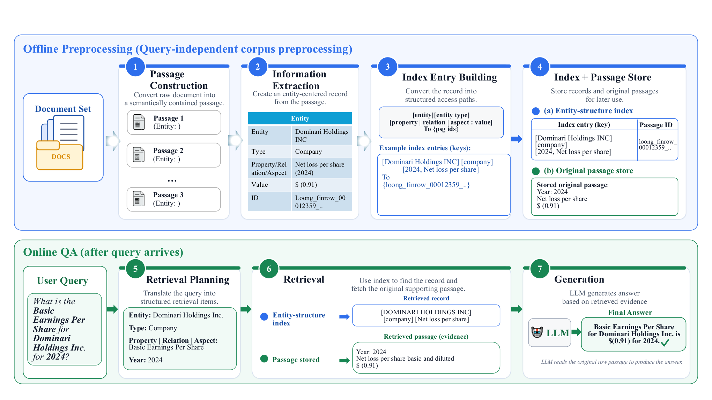
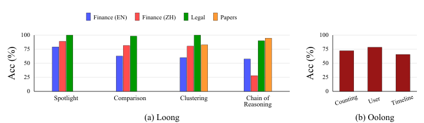
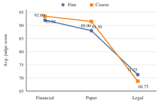
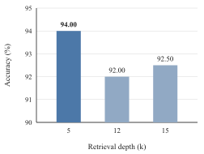

一句话读懂这篇论文
固定 chunk 为什么会让长文档检索失真
固定长度切块便于实现，却可能把实体和证据拆开，把表格行与表头分离，或把多个无关实体混进同一个检索单元。问题越需要跨文档聚合和多跳关系，纯相似度检索越容易返回“局部相关但整体不够回答”的上下文。
实体名称在一个 chunk，支持它的属性、关系或时间信息在另一个 chunk，单独召回任何一块都不完整。
不相关主题被切在同一块，检索虽然命中词面，却把噪声一起送进上下文。
EnSI-RAG 的定位不是把整个语料库转换成一个封闭知识图谱，而是用结构帮助定位证据，最终答案仍回到原始文本。
离线建索引，在线找证据

EnSI-RAG 的完整工作流：离线阶段构造实体中心 passage、抽取记录并建立索引；在线阶段规划检索、回指原文并生成答案。
Passage Construction
围绕一个主实体构造语义自洽的 passage，保留来源文档、位置和局部结构。Extraction + Index
抽取实体、类型、属性/关系/侧面，并把结构字段映射回 passage_id。Retrieve + Generate
查询转为检索计划，找到原始 passage，再由 LLM 综合回答。结构化记录是地址，不是答案
每条记录可抽象为 ⟨entity, type, category, key, value, passage_id⟩。索引键把实体、类型、属性名、关系或侧面映射到一组原始 passage。
实体的属性值，例如人物的出生地、公司财务指标。
实体之间的连接，例如论文引用另一篇论文、公司属于某组织。
实体被讨论的侧面，例如方法、法律论证或某个主题。
索引只负责把“可能有用的证据”找出来；抽取不完整时仍可通过 passage 找到剩余细节，抽取结果不会直接成为模型的推理事实。
把复杂问题拆成结构化检索计划
对每个问题，EnSI-RAG 生成一个由多个 hop 组成的计划。每个 hop 可以约束实体、类型、属性、关系、侧面或目标实体；前一个 hop 找到的中间实体或值，可以实例化下一个 hop。
定位实体
找到问题涉及的主体、公司、论文或案件对象。扩展关系/属性
沿 relation 或 property 找到相关对象与证据集合。回取原文
去重、重排候选 passage，再交给 LLM 综合。与把完整问题直接嵌入匿名 chunk 相比，EnSI-RAG 的结构化 key 让检索路径更可解释，也能保留多条支持证据来处理聚合、矛盾和多跳问题。
长文档、多领域场景下，实体索引带来稳定收益

Loong 与 Oolong 的任务类型分解结果：不同文档结构和问题类型下，EnSI-RAG 都能获得竞争力表现。
| 方法 | Oolong | Loong | 平均 |
|---|---|---|---|
| RAG | 11.32 | 54.35 | 32.84 |
| GraphRAG | 22.00 | 61.28 | 41.64 |
| SLIDERS | 64.67 | 78.57 | 71.62 |
| EnSI-RAG | 71.84 | 84.64 | 78.24 |
需要注意：Oolong 使用确定性切片；Loong 的 EnSI-RAG 子集可能与已发表 baseline 的采样不同，因此 Loong 结果更适合作为参考，而不是严格的同条件 head-to-head。
三个设计选择决定检索质量

标签粒度需要按领域选择：金融和论文适合较粗标签，法律场景保留细粒度区分更好。

在英文金融子集上，Top-5 优于 Top-12/15，更多 passage 可能增加干扰。
对长文档 RAG 的三个启示
chunk 大小只是工程约束；更重要的是实体、证据、表头和局部结构是否被一起保留。
结构适合定位，原文适合证据和最终综合；不要过早把抽取结果压缩成唯一事实。
法律需要细粒度语义，金融表格适合 row-level；检索更多不一定更好，噪声也会损害生成。
EnSI-RAG 的真正贡献是提供一个中间层：比匿名 chunk 更有结构，比完整知识图谱更保留原文和开放性。